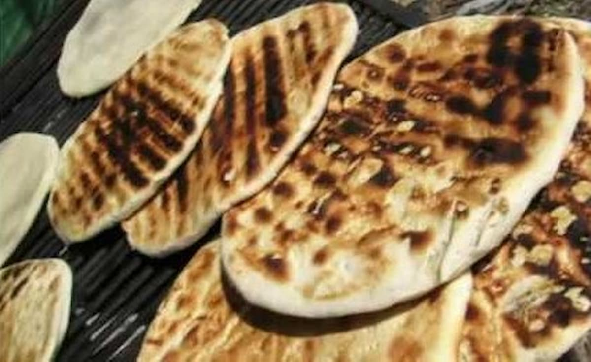

Home
Torta Parilla

Description
En Argentina, we enjoy Torta Parilla, it is a nice meal to eat along mate.
Ingredients
- Harina de trigo: 500 g
- 60 g de grasa vacuna o manteca (derretida)
- 250 ml de agua tibia
- 10 g de sal fina
Steps
- Masa: Disolver la sal en el agua tibia. Formar una corona con la harina, verter la grasa y el agua en el centro, e integrar hasta unir.
- Amasado: Amasar 5 minutos hasta lograr un bollo liso. Tapar y dejar reposar 20 minutos.
- Formado: Dividir en bollos y estirarlos de forma circular (5 a 7 mm de espesor).
- Cocción: Cocinar sobre la parrilla a fuego medio-moderado durante 7 a 10 minutos por lado, hasta que doren y pinchen ligeramente. Servir caliente con el mate.